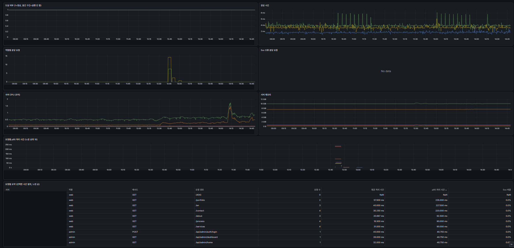

OVERVIEW
실 서비스와 유사한 내부 테스트 환경
실제 서비스처럼 nginx 뒤에서 웹 · 관리자 · API 역할을 함께 띄우고, 생성 · 배포 · 복구 절차를 Jenkins 잡으로 표준화했습니다. 배포한 서버의 도달 여부 · 응답 시간 · 5xx 오류 · 자원 사용량을 Grafana로 확인해, 문제를 실 서비스 전에 발견합니다.
테스트 서버 생성
허용된 GitHub 계정의 저장소만 clone하고 Compose 구성을 검사합니다. 환경 파일과 서버용 override를 만든 뒤 기동하고 nginx에 등록합니다.
업데이트 · 재배포
원격 브랜치의 최신 커밋으로 갱신해 다시 빌드합니다. 기동 실패 시 이전 커밋으로 되돌려 재기동합니다.
실행 서버 중지
nginx 프록시를 해제하고 Compose 프로젝트를 내립니다. 이미지 · 작업본 · 데이터는 남겨 다시 배포할 수 있습니다.
서버 삭제
nginx → 컨테이너 → 작업본 순서로 제거합니다. 데이터와 named volume 삭제는 대상 이름 재입력을 요구하는 선택지로 분리했습니다.
DB 마이그레이션
실행 중인 API 컨테이너에서 TypeORM migration:run 후 migration:show로 적용 상태를 확인합니다.
DB 초기화
대상 이름을 다시 확인한 뒤 schema:drop → migration:run → migration:show를 실행합니다.
ARCHITECTURE
Jenkins · 호스트 에이전트 · nginx 분리
Jenkins 컨트롤러는 권한과 파이프라인을 관리하고, root 작업은 호스트의 검증된 server-ctl 한 곳으로 제한했습니다. 컨테이너 포트는 loopback에만 게시합니다.
OS 설치, WireGuard · SSH 외부 접속, SVN 구축은 같은 프로젝트의 서버 기반이며, 자세한 구축 과정은 내부망 Linux 서버 구축 페이지에서 설명합니다.
WORKFLOW
생성부터 배포 · 복구까지
입력을 먼저 검증하고, 다른 테스트 서버를 내린 뒤 대상만 올립니다. 성공 후에는 접속 정보와 용량을 남기고, 실패하면 작업 종류에 맞춰 정리하거나 롤백합니다.
MONITORING
Prometheus · Grafana로 장애 징후 확인
테스트 서버가 뜨면 server-ctl이 역할별 주소를 Prometheus 수집 대상으로 등록하고, 중지 · 삭제 시 해제합니다. Prometheus는 재시작 없이 대상 파일 변경을 감지하고, 30초마다 수집한 지표를 90일(최대 10GB) 보존합니다.
무엇을 수집하는지
- node-exporter: 호스트 CPU · 메모리 · 디스크 · 네트워크
- cAdvisor: 컨테이너별 CPU · 메모리 (서버 단위로 묶음)
- blackbox: 역할별 HTTP 도달 여부와 응답 시간
- nginx 로그 exporter: 역할 · 상태 코드 · 경로별 요청 수와 처리 시간
저장소에서 관리하는 Grafana
- 데이터 소스와 대시보드 JSON을 자동 등록
- 테스트 서버를 선택해 이력 비교
- UI 수정은 저장하지 않고 저장소 기준으로 유지
출시 전에 보이는 문제
- 5xx · 연결 거부 · 5초 시간 초과는 도달 실패로 표시
- 느린 요청 상위 10개의 p95 처리 시간
- 배포 후 CPU · 메모리 증가 추이
실행 화면

테스트 서버 대시보드: 도달 여부 · 응답 시간 · 역할별 분당 요청 · 5xx 오류 · 서버 CPU / 메모리 · 요청별 p95 처리 시간 · 요청별 요약(요청 수 · 평균 · p95 · 5xx 비율). 서버 이름은 가렸습니다.
Prometheus와 exporter는 전용 Docker 네트워크 안에서만 접근하고, 외부에는 Grafana 하나만 LAN · VPN 주소로 공개합니다. 설정은 기동 전에 promtool 등으로 검사해 오류가 있으면 기존 컨테이너를 그대로 유지합니다.
PIPELINE AS CODE
커밋으로 Jenkins 잡 동기화
pipelines/탭/이름/Jenkinsfile 구조를 seed 잡이 읽어 파이프라인과 상단 탭을 자동 생성합니다. Jenkins 화면에서 잡을 손으로 복제하지 않아도 저장소 상태와 운영 화면이 맞춰집니다.
변경 즉시 반영
SVN post-commit 훅이 토큰으로 seed를 호출합니다. seed는 Jenkinsfile을 스캔하고 Job DSL로 잡과 탭을 생성하며, 저장소에서 사라진 정의는 Jenkins에서도 삭제합니다.
기존 설정 보존
Job DSL 재생성 때 기존 properties와 actions를 보존합니다. 선언형 파라미터가 바뀐 잡만 갱신 실행하고 실제 작업 없이 NOT_BUILT로 끝냅니다.
공통 운영 로직
serverLocal은 서버 목록 · 드롭다운 · 용량 · 접속 주소를, notify는 결과와 실패 정보를 담당합니다. 파이프라인은 작업 순서와 잡별 해결 안내에 집중합니다.
재현 가능한 Jenkins
setup-host.sh와 init.groovy.d가 플러그인, 자격증명, SSH 노드, 전역 라이브러리, 권한, seed 잡을 멱등하게 구성합니다. 비밀값은 임시 파일에서 등록한 뒤 삭제합니다.
NOTIFICATION
Discord 웹훅 운영 알림
성공 여부만 보내지 않고, 실패했을 때 다음 행동까지 한 메시지에 담았습니다. 모든 server-local 잡은 롤백과 정리가 끝난 뒤 같은 채널로 최종 결과를 전송합니다.
운영 결과 요약
- 잡 이름 · 빌드 번호 · 대상 · 실행자
- 접속 역할, 커밋 변화, 내린 서버
- 서버 사용량과 HDD 남은 용량
원인과 복구 안내
- 실패한 stage와 실제 오류 한 줄 자동 추출
- 오류 패턴별 해결 방법 매칭
- 추가 로그와 빌드 링크 제공
알림이 빌드를 깨지 않게
- 웹훅 URL은 Jenkins Secret text로 보관
- Java HTTP API로 전송, 추가 플러그인 불필요
- 전송 실패는 경고만 남기고 빌드 결과 유지
TECH STACK
사용 기술과 선택 이유
Compose, 설치 스크립트, Jenkinsfile, Groovy 라이브러리, Python CLI와 모니터링 설정에서 확인한 역할만 정리했습니다.
| 기술 | 왜 사용했는지 |
|---|---|
| Ubuntu Server | Jenkins · 테스트 서버 · 모니터링이 함께 도는 내부망 호스트입니다. 설치 스크립트 하나로 방화벽 · 계정 · sudoers · 모니터링 설정을 다시 적용할 수 있게 했습니다. OS 설치 과정은 내부망 Linux 서버 구축 페이지에서 설명합니다. |
| OpenSSH | Jenkins 컨테이너에 Python과 Docker 권한을 넣지 않고, SSH로 호스트를 에이전트로 붙여 작업을 실행합니다. 호스트 키를 미리 등록해 접속 대상을 검증합니다. |
| Jenkins LTS · Declarative Pipeline | 생성 · 배포 · 중지 · 삭제 · DB 작업을 권한과 stage가 보이는 반복 가능한 운영 절차로 만들었습니다. 컨트롤러는 Docker Compose로 실행하고 홈 디렉터리를 호스트에 보존합니다. |
| Job DSL · seed | Jenkinsfile 디렉터리 구조를 잡과 탭으로 동기화해 화면 수작업을 없애고, 추가 · 변경 · 삭제를 저장소 커밋으로 관리합니다. |
| Jenkins Shared Library | 동적 서버 목록, 파라미터 갱신, 관리자 확인, Discord 알림처럼 여러 잡이 공유하는 Jenkins API 로직을 한 곳에 뒀습니다. |
| Docker Compose | 프로젝트의 Compose 정의를 사용하되 서버 전용 override로 loopback 포트, 재시작 정책과 메모리 기본값을 강제합니다. |
| NginX | 컨테이너는 127.0.0.1에만 게시하고 nginx만 LAN · VPN 인터페이스에서 받아 Docker의 방화벽 우회를 막습니다. WebSocket 헤더도 전달합니다. |
| Prometheus · exporter | 호스트 · 컨테이너 자원, HTTP 도달 여부, nginx 로그 기반 요청 · 오류 · 처리 시간을 한 곳에 모읍니다. 테스트 서버는 파일 기반 대상 등록(file_sd)으로 재시작 없이 추가 · 해제됩니다. |
| Grafana | 수집한 지표를 테스트 서버별 대시보드로 보여 줍니다. 데이터 소스와 대시보드를 저장소 파일로 자동 등록해 재설치해도 같은 화면을 재현합니다. |
Python 3 server-ctl | git · Docker · nginx · 파일 작업을 인자 배열로 실행하고, 이름 · 경로 · 저장소 소유자 · Compose 구성을 검사하는 root 전용 경계로 사용했습니다. |
| TypeORM CLI | 실행 중인 API 컨테이너 안에서 마이그레이션 적용과 스키마 초기화를 수행하고, 마지막 migration:show 결과를 Discord에 요약합니다. |
| Discord Webhook | 별도 알림 플러그인 없이 Jenkins Java API로 최종 결과를 전송합니다. 웹훅은 탭별 Secret text 자격증명으로 분리합니다. |
| UFW · sudoers | Jenkins 컨테이너에 Docker 소켓을 주지 않고 호스트 에이전트를 사용하며, 에이전트 계정의 sudo는 root 소유 server-ctl 설치본으로 제한합니다. |
OPERATING RULES
실패와 위험을 다루는 방법
생성과 배포의 복구 기준 분리
새 서버 생성 실패는 nginx · 컨테이너 · 작업본을 역순으로 정리합니다. 기존 서버 배포 실패는 새 커밋 기동 전까지만 이전 커밋으로 되돌립니다.
데이터 삭제와 DB 초기화 재확인
서버 데이터 삭제와 DB reset은 대상 이름을 다시 입력해야 합니다. 기본 remove는 작업본과 컨테이너만 지우고 데이터는 남깁니다.
동시에 테스트 서버 한 대만
고정 역할 포트 충돌을 막기 위해 create와 deploy 직전에 다른 실행 서버를 내립니다. 내린 서버 이름은 Discord 알림에 남깁니다.
토큰을 명령행과 로그에서 제외
GitHub 토큰은 Jenkins 자격증명에서 꺼내 stdin으로 전달하고 셸 trace를 끕니다. Discord 웹훅과 부트스트랩 비밀값도 저장소에 기록하지 않습니다.